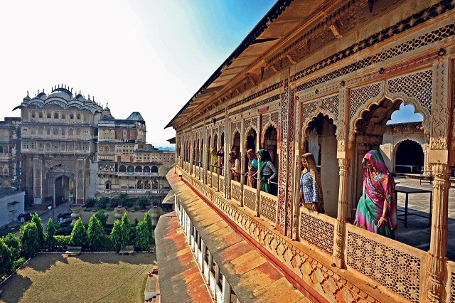
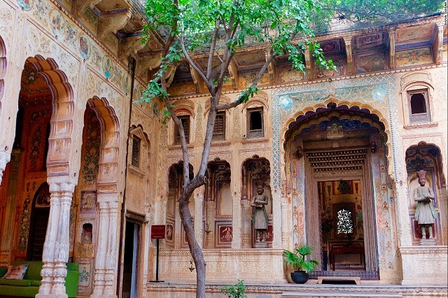
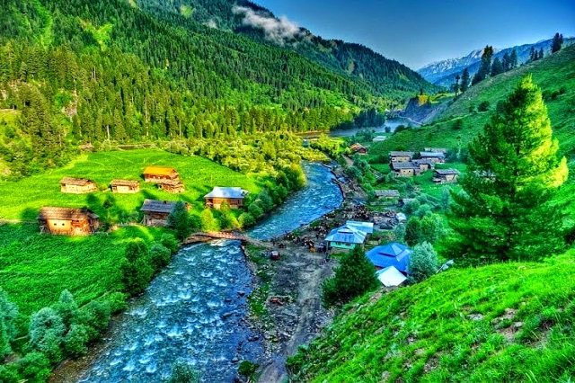
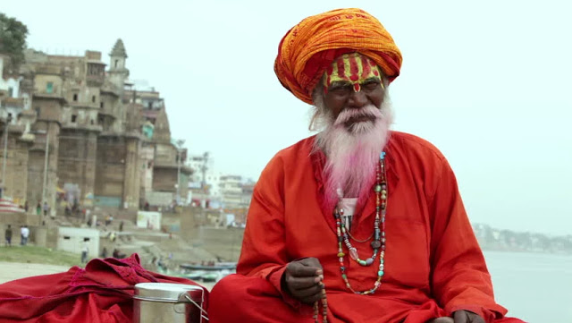
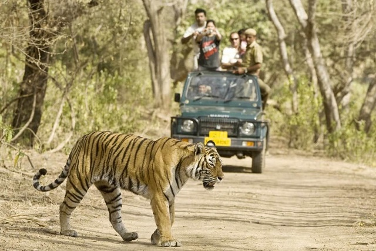
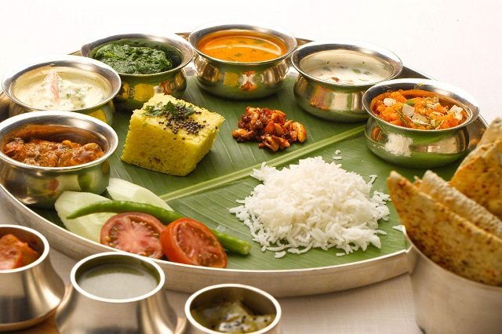
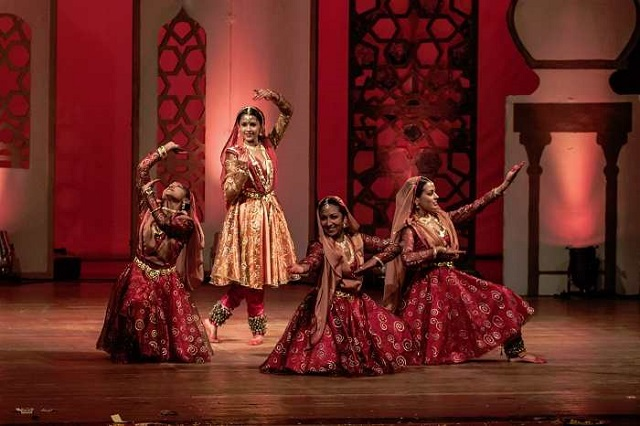
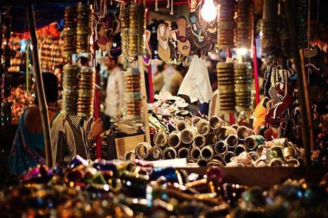
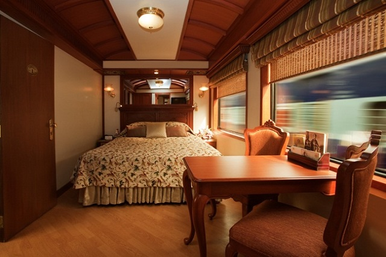
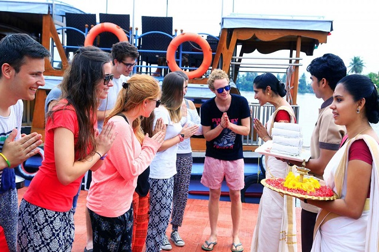

-
India is a vast country in the world with many attractions mainly for travel & tourism. Many foreigners mostly like to visit India to spend a memorable and unforgettable holiday trip experience in their life. Not in one, many tourist attractions make tourists visit India again and again from all sides of the world.
-
India is famous for tourism. Each state in India is famous for different tourist attractions. Different places in India will entertain tourists by natural wonders, tranquil places, history and architecture, spirituality etc. All these make visitors to visit India for a memorable trip.
-
The main reason why India is famous for tourism means all type of tourist destinations in one place. India is the right place for wild safaris, desert safaris, nature seeking places, honeymoon spot, adventurous activities, spiritual places, and historical places of India.
-
India is famous for many historical monuments and the architectural skill involved. For the history seekers, India is the apt place to visit different historical monuments. Each historical monument has a great history and its specific identity. The royalty of Indian kingdom can be seen in these historical monuments. Many royal palaces are now converted into world’s best hotels and resorts.
-
The tourists can lodge in these royal palaces to experience the royalty of Indian Kings. The architectural skills involved in these monuments show us the times of Indian kings. The major attraction of all historical monuments is architectural designs. Different constructions held with a unique identity which is because of the thoughts of great architects.
-
Even some monuments are ideal for architectural skills, for example, Taj Mahal, Red fort, Sheesh Mahal etc. Some historical monuments in India attract science seekers also due to the science behind the construction of the monument. For example Jantar Mantar is a famous observatory in India. Not in one all different types of historical monuments will make you enjoy and learn something from them.
-
As we know India is a mixture of all type of attractions and one of them is nature. For the nature lovers, India is the correct place where nature makes you feel to rest in a pleasant atmosphere. Mostly foreigners wanted to visit India for natural paradise and a memorable holiday spend in the beauty of nature. Different waterfalls, lakes, rivers, hill stations etc are the tourist attractions.
-
India is rich for natural attractions in large number to the tourists. The atmosphere at waterfalls will make you spend your whole life there with your friends and families. Some lakes in India with beautiful parks is the apt place for photographers, bird lovers, and nature seekers.
-
Hill stations in India are famous for a pleasant and blissful environment. Mostly tourists attract to Hill Stations why because of the beautiful atmosphere at the topmost hills. The atmosphere at the hill stations is very cold and chilling. That’s why India is heaven for nature and tourism.
-
Famous Natural spots: Mount Abu Hill station, Pichola Lake in Udaipur, Dal Lake in Jammu and Kashmir, Nubra valley in Ladakh, different falls in Kerala.
-
India is a spiritual country because of nowhere you can see in the world as much as India. India is totally filled with a lot number of large temples and ashrams. Many foreigners visit these places for a pleasant and peaceful environment. These places are re-defined with spiritual programmes like Yoga, workouts, meditation training etc. Many foreigners are mostly like to visit India for learning Yoga.
-
In India Yoga can be taught in a peaceful and tranquil environment means ashrams. Different ashrams in India will teach you a define Yoga and they can turn as you Yoga teachers also. Different temples in India attracts tourists mostly are Jainism and Buddhism temples and others.
-
India is the defined place for seeking Yoga, Meditation, and traditional practices which helps you in different ways. Even some people visit India and spends some days in ashrams for seeking all these actions.
-
Famous spiritual centers: Golden temple in Amritsar, Dharmasala and Manali in Himachal Pradesh. Parmarth Niketan in Rishikesh.
-
India is famous for the different type of safaris like wildlife safaris, desert safaris, etc. India is a place of different national sanctuaries and tiger reserves. In India, wildlife safari is available which we can experience the wildlife of tigers and different animals. Wildlife safari in India will give you a memorable and adventurous trip in your life.
-
India is the right place for many adventurous acts. For the best experience visit north India because it is the place for adventurous acts the nearby Himalayas and different valleys, rivers, mountains. A large number of tourists visits India for a thrilling and adventurous holiday trip.
-
The famous adventurous acts in India are Bungee jumping, Trekking, Paragliding, scuba diving, Dune bashing etc. The feeling you will get while doing these acts is weird and unforgettable in your life. For the adventure seekers, India is the apt place. So have an adventurous trip to India.
-
Famous adventurous spots: Rishikesh, Bir Billing, Andaman Islands, Rajasthan.
-
Apart from tourist places, India is famous for its delicious food. The food on streets and in restaurants are tasty and delicious. After completing trips tourists not require tired to search for food. Because everywhere food is available on roads or in hotels. India is home to different species so tourists can enjoy all different types of varieties.
-
Every state has its unique speciality in food items. Where ever you go in India the food will not disappoint you. Many tourists like to taste Indian hot and spicy food. So try to taste all varieties of food in your location.
-
India is well-known as the land of arts and cultures. Many artists in all over the world from India. In India arts and cultures are mostly encouraged because not to forget our ancestral cultures. Every place in India is famous for different arts and cultures.
-
During festivals you can experience the Indian arts and cultures. At the time of different festivals, these arts and cultures will be reflected at up most. In one word, these arts and cultures are the symbols of Indian culture and heritage.
-
Another attraction is shopping in India. There will be many shopping complexes in nearby tourist places. The things available in India will be different and attractive. Many foreigners like shopping in India. The major attractions in India for shopping are the artifacts, handicrafts, souvenirs, hand looms, clothes etc.
-
India is at topmost in arranging luxurious needs to tourists. There will be resorts and hotels at all nearby most popular tourist places. The maintenance of these resorts and hotels are neat and luxurious to spend a holiday trip with all needs as you feel at home.
-
Indians will treat the tourists in a respective manner. The receiving manner of Indians is very respective and helpful. Residents will help the tourists to take a tour to all nearby tourist places. They will be always helpful to the tourists because Indians follows the slogan “Atithi Devo Bhava”
1. History and Architecture



2. The Heaven of Nature

3. Spirituality and Harmony

4. Safaris

5. Place of Adventurous Acts

6. Delicious Food

7. Land of Arts and Cultures

8. Shopping

9. Luxurious Journey

10. Hospitality
